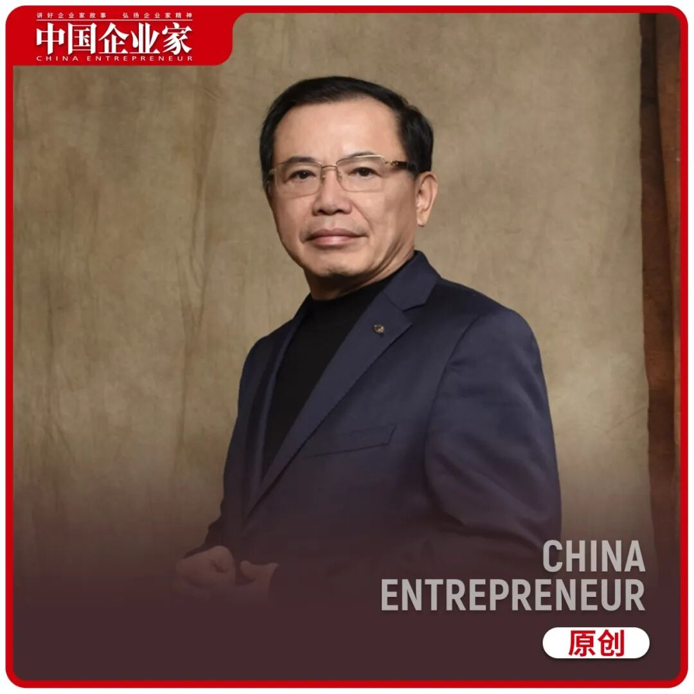
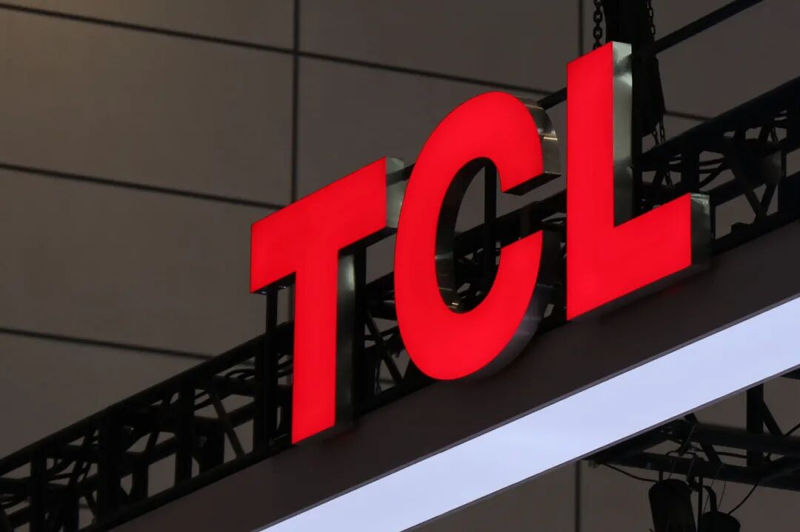
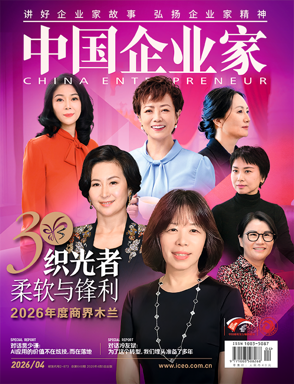
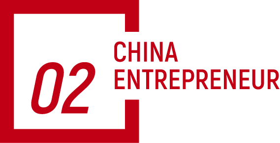
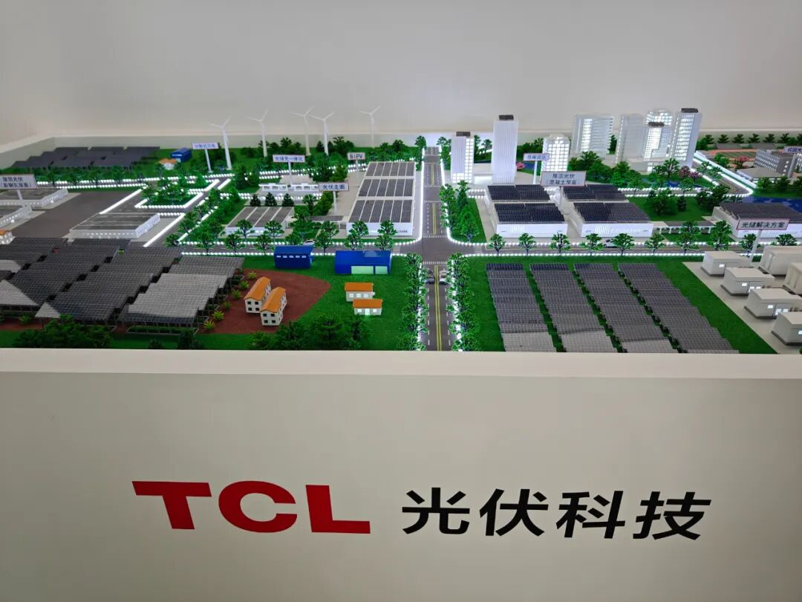
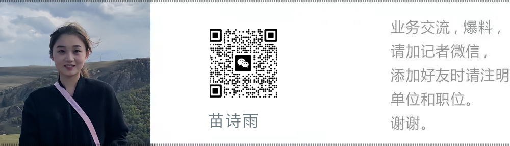
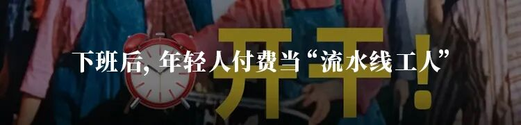
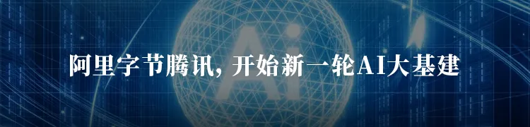

📈 9季度亏掉207亿，李东生还不认输
Nine quarters of 20.7 billion yuan losses, yet Li Dongsheng refuses to give up


文｜《中国企业家》见习记者 苗诗雨
见习编辑｜张昊 编辑｜马吉英
TCL中环比TCL科技早两天发布了今年一季度财报earnings[ˈɜrnɪŋz] n. 财报；收益；利润。
4月27日，TCL中环财报显示，今年一季度实现营收revenue[ˈrevənju] n. 营收；收入；税收65.49亿元，同比增长7.34% ，但归母净利润依然亏损16.47亿元，较去年同期亏损19.06亿元有所收窄。而在TCL科技的一季度财报中，营收为434.5亿元，同比增长growth[ɡroʊθ] n. 增长；生长；发展8.4%；归母净利润profit[ˈprɑfɪt] n. 利润；利益；收益为15.6亿元，同比增长53.7%。
“华星光电（TCL科技的核心板块sector[ˈsektər] n. 板块；部门；区域）还在养活TCL中环”，在投资者和媒体眼中，这几乎是一致的评价。而6年前，TCL科技打败珠海华发、IDG财团等对手，斥资125亿元参与中环集团（TCL中环的前身）的混改reform[rɪˈfɔrm] n. 改革；改良；改造项目，并拿下100%股权，这家半导体显示巨头是要把新能源作为战略级的“第二曲线”。
在“灵魂人物”沈浩平2024年年中辞去CEO职务之后，TCL中环就进入了“静默期silence[ˈsaɪləns] n. 沉默；寂静；静默”：管理层少有对外露面；2025年至今，官网website[ˈwebsaɪt] n. 网站；官网只更新了5条信息；《中国企业家》向TCL中环提出采访interview[ˈɪntərvju] n. 采访；面试；访谈需求，发送邮件未得到回复；在雪球等投资者investor[ɪnˈvestər] n. 投资者；投资人平台上，关于TCL中环的讨论并不多，不复当年“大白马股”的风采……
这份难看的财报，对TCL中环的股价stockprice[stɑk praɪs] n. 股价；股票价格负面影响都微乎其微——在4月28日跌了0.7%之后，竟连涨两天，涨幅分别为1.65%和0.46%。经历过2024年和2025年总计190.82亿元的亏损loss[lɔs] n. 亏损；损失；失败之后，TCL中环的坠落速度的确在减慢，而且股民也有了心理建设，不会像2024年第一次碰到亏损时那么错愕：为什么能亏这么多？
至少在光伏photovoltaic[ˌfoʊtoʊvɑlˈteɪɪk] adj. 光伏的；光电的业务层面，TCL中环还没找到解法。今年4月1日起，光伏产品的出口退税taxrefund[tæks rɪˈfʌnd] n. 退税；税款退还正式取消了，形成了一季度明显的“抢订单、抢装机”现象，这意味着后续的业绩在一定程度上被提前透支。
TCL中环也指出，税收政策调整对光伏行业短期需求形成一定支撑，但供需supplydemand[səˈplaɪ dɪˈmænd] n. 供需；供求关系依然严重失衡，硅料和硅片价格延续走弱；同时，主要原材料价格上涨，电池组件端通过提价以缓解成本压力，产业链主要环节仍处周期cycle[ˈsaɪkəl] n. 周期；循环；周期律底部。

实际上，TCL集团创始人、董事长李东生在过去两年对于TCL中环的改造transformation[ˌtrænsfərˈmeɪʃən] n. 改造；转变；变革是直接的。不仅空降了多位“TCL系”管理者，关于业务路径的讨论也有了答案——TCL中环不再死守硅片赛道，走“专业化”路线，而是要完成“一体化integration[ˌɪntɪˈɡreɪʃən] n. 一体化；整合；集成”，这也是光伏巨头公司的共同选择。
今年上半年，他接连做了两笔重要交易transaction[trænˈzækʃən] n. 交易；事务；办理。
年初，TCL中环突击报价bid[bɪd] n. 报价；投标；出价了一道新能。后者遇到严重资金链cashflow[kæʃ floʊ] n. 资金链；现金流问题，在2024年底就被传“挂牌出售”，但过程崎岖，直到今年才有了买家。在2023年冲击IPO之前，它的估值valuation[ˌvæljuˈeɪʃən] n. 估值；估价；评价已近80亿元。
而TCL中环用2.58亿元买老股，10亿元增资capitalincrease[ˈkæpɪtəl ɪnˈkris] n. 增资；增加资本的交易结构，就拿到了一道新能的产能资源。公开数据显示，到2025年底，后者拥有40GW（吉瓦）电池和40GW组件产能capacity[kəˈpæsəti] n. 产能；容量；能力。虽然对应着债务，但这让TCL中环瞬间进入了下游downstream[ˌdaʊnˈstrim] adj. 下游的；顺流的产能的第一阵营。
紧接着，财务层面最大的“包袱”Maxeon也有了好消息——与爱旭股份的专利patent[ˈpætənt] n. 专利；专利权；专利品纠纷，以收到16.5亿元的五年期专利许可费而画上句号。这家斥巨资收购来的国际光伏巨头，业务受政策影响停滞，在过去两年对TCL中环的业绩都有巨大拖累。
看上去，李东生要“死磕persist[pərˈsɪst] v. 坚持；持续；执意”光伏，他也的确看到了机会。
2025年，TCL中环的组件业务出货shipment[ˈʃɪpmənt] n. 出货；装船；运输15GW，同比暴增82.31%，营收占比超过32%。硅片的营收占比revenueshare[ˈrevənju ʃer] n. 营收占比；收入份额已降至42%左右，而2024年，该业务的占比还高达近六成。迟到了好几年，TCL中环的“一体化”战略strategy[ˈstrætədʒi] n. 战略；策略；战略学竟然还有机会。
经过3年的淘汰赛elimination[ɪˌlɪmɪˈneɪʃən] n. 淘汰赛；消除；淘汰，光伏组件环节不仅没有迎来马太效应，反而有了分散的趋势。去年晶科能源全球出货量shipmentvolume[ˈʃɪpmənt ˈvɑljum] n. 出货量；运输量排名第一，但86GW的数字，同比下降了7.3%。如果能快速“消化”一道新能，TCL中环会不会弯道超车overtaking[ˌoʊvərˈteɪkɪŋ] n. 弯道超车；超车；超越？
就在接近完成对一道新能的收购之前，李东生接受了《经济观察报》采访interviewed[ˈɪntərvju] n. 采访；面试；访谈，文章题目为《李东生：我有话想说》。他一改过去两年“温和”的状态，直接提到光伏行业还在流血bleeding[ˈblidɪŋ] n. 流血；出血；流失，需要尽快浮出水面，但不确定的因素还比较多。
“落后产能出清capacityclearing[kəˈpæsəti ˈklɪrɪŋ] n. 产能出清；产能清理是一个正确的口号，但实际上大家很难分辨什么是落后产能。”他说，“我们不敢投，但挡不住一大堆人在这些项目里前仆后继relentless[rɪˈlentləs] adj. 前仆后继的；不懈的。这种过度投资overinvestment[ˌoʊvərɪnˈvestmənt] n. 过度投资；投资过剩、违背市场规律的行为，会对行业造成长时间的负面影响。”
他似乎是在为后续的动作定调toning[ˈtoʊnɪŋ] n. 定调；基调；基调设定。在《中国企业家》的日常采访中，多位从业者都认为李东生已“急不可耐impatient[ɪmˈpeɪʃənt] adj. 急不可耐的；不耐烦的”，如果还要保住TCL中环的龙头位置，留给他的时间并不多。
而这并没有对投资者心态有太大的正向作用，光伏业务看上去已被“翻篇turningpage[ˈtɜrnɪŋ peɪdʒ] n. 翻篇；翻页；新的一页”了。还在讨论“TCL中环价值被低估undervalued[ˌʌndərˈvæljud] adj. 低估的；被低估的”的投资者，主要看点已变成了半导体材料业务。去年，该业务的营收为57.1亿元，增长了21.7%，出货量稳居国内半导体semiconductor[ˌsemikənˈdʌktər] n. 半导体；半导体材料硅片行业第一。国产替代domesticsubstitution[dəˈmestɪk ˌsʌbstɪˈtuʃən] n. 国产替代；国内替代是这个赛道的核心逻辑，而TCL中环的核心产品硅片是芯片制造的基础材料。
不知道李东生对此是何心境，在光伏上折腾了6年，耗费数百亿元，别搞得白忙活futile[ˈfjutl] adj. 白忙活的；徒劳的；无效的了！

在被收购之前，TCL中环身上有着强烈的个人英雄主义heroism[ˈheroʊɪzəm] n. 英雄主义；英勇行为标签，沈浩平是当之无愧的“灵魂”。
1983年，他大学毕业后进入天津市半导体材料厂主攻技术，从工艺流程process[ˈprɑses] n. 工艺流程；过程；程序干起。那时生产的高纯度单晶硅monocrystalline[ˌmɑnoʊˈkrɪstəlaɪn] adj. 单晶硅的；单晶的不用于光伏板，主要用于半导体领域，翌年，他便创新了“区熔法单晶技术”，这项沿用了三十多年的技术奠定了TCL中环在国内晶体硅领域的领先地位。
上世纪90年代，若不是企业困难得连工资都发不出，沈浩平或许会深耕技术，在学术academic[ˌækəˈdemɪk] adj. 学术的；学院的；理论的领域大放异彩。当时在内部已足够有威望prestige[preˈstiʒ] n. 威望；声望；威信的他，开始琢磨出路，“养活项目上的兄弟”，是他折腾的动机。
2007年上任公司总经理之后，他决定从半导体材料领域全面转向pivot[ˈpɪvət] n. 转向；枢轴；转变光伏硅片领域。“横下一条心坚持把光伏产业做大做强scaling[ˈskeɪlɪŋ] n. 做大做强；规模化；扩展，是在全球硅材料快速发展的基本形势下，我们公司被边缘化之后的唯一途径。”沈浩平说。
抛开国企的身份，沈浩平和TCL中环的路径算是一次典型的“科学家scientist[ˈsaɪəntɪst] n. 科学家；科研人员创业”。依靠技术创新innovation[ˌɪnəˈveɪʃən] n. 技术创新；创新；革新，TCL中环历经数次周期，均平稳度过。即便是2012年业务刚有起色时，就撞上了欧美国家对国内光伏行业的“双反antidumping[ˌæntiˈdʌmpɪŋ] n. 反倾销；反补贴”（反倾销、反补贴）政策，无锡尚德、江西赛维和英利三巨头相继倒下。
沈浩平的方法论简单直接——生产更好、更便宜的产品，减少亏损并抢占市占率marketshare[ˈmɑrkɪt ʃer] n. 市占率；市场份额。大部分的技术创新和资源配置都围绕产品推进，以至于在光伏四大主材（硅料、硅片、电池、组件）中，只有硅片领域实现了较高的市场集中度concentration[ˌkɑnsənˈtreɪʃən] n. 集中度；集中；浓度，TCL中环和隆基绿能两家的合计市占率常年在50%以上。
这本是个极其理想的市场格局landscape[ˈlændskeɪp] n. 格局；景观；局面。坚持“专业化”路径，TCL中环的规模scale[skeɪl] n. 规模；规模大小；等级、成本优势明显，在价格阻击中，有数十亿元的让利空间。即便是资本capital[ˈkæpɪtəl] n. 资本；资金；首都涌入，也会更青睐于市场空间更大、投产周期更短的下游组件环节。
事后看来，TCL中环当下的困局predicament[prɪˈdɪkəmənt] n. 困局；困境；窘境源于2019年行业的“一体化”风潮。而关于发展路径的争执也始于此，它是少数几家“一体化”程度不高的头部光伏公司，这甚至被认为是沈浩平的“执念obsession[əbˈseʃən] n. 执念；痴迷；执迷”。
老对手隆基绿能早就开始重点布局layout[ˈleɪaʊt] n. 布局；安排；设计下游环节，而以晶科能源为代表的下游组件企业也疯狂往上游扩张。大家的目标很明确，控制从原料到光伏板的全生产流程。那是个“争当硅王siliconking[ˈsɪlɪkən kɪŋ] n. 硅王；硅业之王”的年代，能在中国市场做到前十位，就意味着在国际市场上的无限机会。
即便如此，TCL中环都稳稳当当。它当时的状态不算稳定——刚刚被并入了TCL体系，牵扯到大量组织融合organizational[ˌɔrɡənəˈzeɪʃənəl] adj. 组织的；机构的。但从2021年到2023年，它的归母净利润分别为40.3亿元、68.19亿元、34.16亿元，这3年的毛利率grossmargin[ɡroʊs ˈmɑrdʒɪn] n. 毛利率；毛利润分别为21.69%、18.19%、20.2%。在一段时间内，它还超过了半导体显示成为TCL科技第一大收入来源revenuesource[ˈrevənju sɔrs] n. 收入来源；收益来源。
内部其实对危机早有预警warning[ˈwɔrnɪŋ] n. 预警；警告；警报。2023年3月发布的2022年年报中就提到：新老玩家持续投资，各环节产能快速扩张，产品趋于同质化homogenization[həˌmɑdʒənəˈzeɪʃən] n. 同质化；均质化，市场竞争愈发激烈，产业格局面临重塑。多晶硅料、单晶硅片、电池、组件阶段性投资和达产周期形成的供需不平衡imbalance[ɪmˈbæləns] n. 不平衡；失衡；不均衡，造成部分产品周期性供应短缺或过剩，对市场环境及经营带来不确定性。
年报还直面了“一体化”的问题，但公司认为“未来发展仍将遵循经济学的基本规律”，要始终坚持“差异化differentiation[ˌdɪfəˌrenʃiˈeɪʃən] n. 差异化；区别；区分”的经营理念。
2023年第四季度，包括硅片在内的光伏主材，价格均出现断崖式clifflike[klɪf laɪk] adj. 断崖式的；悬崖般的下跌。2024年4月25日，众多TCL中环投资者为了年报发布一直等到后半夜，“靴子boot[but] n. 靴子；靴筒；启动”终于落地。
2023年，公司实现营收591亿元，同比减少decrease[dɪˈkris] n. 减少；降低；减小11.74%；归母净利润netprofit[ˈprɑfɪt] n. 利润；利益；收益34.16亿元，同比减少49.90%。而前三个季度quarter[ˈkwɔrtər] n. 季度；四分之一；一刻钟，TCL中环的归母净利润还为61.88亿元。2024年第一季度，它又产生了8.8亿元亏损。而上一次亏损，还发生在12年前，TCL中环也只用了一个季度就扭亏为盈。
很多投资者想不通：公司可以亏，但怎么能亏这么多？尤其是同阶段，一些头部leading[ˈlidɪŋ] adj. 头部的；领先的；主要的一体光伏企业还在赚钱。
在年报的董事长致辞中，李东生提到行业中短期仍将处于市场周期底部，供需关系严重失衡，产品技术转型加速，产能优胜劣汰survival[sərˈvaɪvəl] n. 优胜劣汰；生存；存活推动落后产能出清。在业绩交流会上，沈浩平则判断，这轮低谷trough[trɔf] n. 低谷；波谷；槽估计会持续18个月，预计在2025年第二季度会好转。
多数投资者对TCL中环抱有希望hopeful[ˈhoʊpfəl] adj. 抱有希望的；有希望的。毕竟两位管理者均是“逆周期countercycle[ˈkaʊntərˌsaɪkəl] n. 逆周期；反周期”操作的高手，行业那时对周期也普遍乐观——不少人认同沈的观点，甚至于在做资金规划时，锚定的是2025年行业企稳。
沈浩平多次在业绩会上重复自己的逻辑：“尊重分工是基本经济规律，也是未来发展中的最大优势”“未来全球光伏行业的主导权dominance[ˈdɑmɪnəns] n. 主导权；支配；优势要从资本方转向工程师方向”“在价格周期处在高位或者上升期时，商业和资本的作用可能会导致平衡或抗衡技术周期的现象，但是以商业逻辑和产业历史布局逻辑来对抗产业的基本规律是无法实现的”……
但分歧disagreement[ˌdɪsəˈɡrimənt] n. 分歧；不一致；争论已经产生，行业开始盛传李东生和沈浩平的分歧：李坚持一体化，沈则坚持专业化。被并购后，TCL中环的管理一直有着很强的自主性autonomy[ɔˈtɑnəmi] n. 自主性；自治；自治权，管理团队依然是原有的老班底。
2024年4月，李东生谈及TCL中环的战略目标strategicgoal[strəˈtidʒɪk ɡoʊl] n. 战略目标；战略目的：硅片全球市占率第一，综合实力全球第一，成为全球Tier1高效组件供应商（彭博新能源财经评选的优秀光伏组件厂名单）。在外界看来，这更像是两人的一次“妥协compromise[ˈkɑmprəˌmaɪz] n. 妥协；让步；折中”，虽然没提“一体化”，但下游组件业务终于上升到了战略级别。


回过头看，沈浩平的经验主义empiricism[ɛmˈpɪrɪsɪzəm] n. 经验主义；经验论让他错失了一次力挽狂澜的机会，而李东生则完成了一次老辣的“止血”。
2024年上半年，TCL中环出人意料地开启了强攻——满产满销fullcapacity[fʊl kəˈpæsəti] n. 满产满销；全产能。7月，中国有色金属工业协会硅业分会的硅片周评提到：两家一线企业开工率utilizationrate[ˌjutləˈzeɪʃən reɪt] n. 开工率；利用率分别维持在50%和95%，一体化企业开工率维持在50%～60%之间。那个开工率为95%的“一线企业”正是TCL中环，而老对手隆基绿能已明显加大了防守defense[dɪˈfens] n. 防守；防御；防卫力度。
沈浩平肯定希望通过价格战pricewar[praɪs wɔr] n. 价格战；降价竞争加快市场出清，但这极度冒险。
时任TCL中环董办总监薛新告诉《中国企业家》，TCL中环每瓦硅片成本领先costleading[kɔst ˈlidɪŋ] adj. 成本领先的行业0.03元，以满产能计算，有将近60亿元的让利空间。
“当产品价格在全成本以下的时候，企业会降低开工率，因为生产越多赔的就越多。但是这些工厂不开工，设备也会自然折旧，员工工资还要发，银行贷款还要还，开工和不开工都是两难，最后会被市场出清。”薛新说这是在给下游企业“发红包”，业内都会来找TCL中环买硅片。2024年6月，它的市占率share[ˈmɑrkɪt ʃer] n. 市占率；市场份额从23.4%升到了30%。
但还没等到中报发布，8月初，沈浩平就辞去了CEO职务。月底发布的中报interimreport[ˈɪntərɪm rɪˈpɔrt] n. 中报；中期报告显示：2024年上半年，公司营收162.13亿元，同比下降53.54%；归母净利润亏损30.64亿元，同比下降yearonyear[jɪr ɑn jɪr] adv. 同比；与去年同期167.53%。
策略还未完全展开，李东生就紧急踩了刹车brake[breɪk] n. 刹车；制动器；制动。沈浩平“下课”之后，他开始向内部派驻TCL老臣veteran[ˈvetərən] n. 老臣；老兵；老手，包括新任CEO欧阳洪平等。TCL中环也放弃了原有的“市场出清”策略，转入战略重整restructuring[ˌristrʌktʃərɪŋ] n. 重整；重组；重构阶段。2023年，TCL中环本来公布了138亿元的可转债convertiblebond[kənˈvɜrtəbəl bɑnd] n. 可转债；可转换债券项目，用于硅片和电池的扩产。2024年5月，该项目融资额大幅缩减reduce[rɪˈdus] v. 缩减；减少；降低至49亿元，而半年后彻底被叫停。
他显然无法忍受TCL中环如此好的底子foundation[faʊnˈdeɪʃən] n. 底子；基础；地基，结局会如此之差。李东生以战略见长，是出了名的“收购acquisition[ˌækwɪˈzɪʃən] n. 收购；收购行为；获得大师”。
不论是奥马电器还是汤姆逊彩电业务，他总是在资产因非核心业务原因（如金融爆雷），或技术更迭（如CRT显像管技术被淘汰），导致价值被严重低估时出手，然后剥离divestiture[daɪˈvestɪtʃər] n. 剥离；脱手；出售杂质，获取被忽视的核心产能或渠道。
TCL集团也有着根深蒂固的制造业基因gene[dʒin] n. 基因；遗传因子；起源，区别于单纯的资本运作，它能在技术和管理上强赋能并入的新业务，也有足够的耐心去忍受亏损。

李东生在接受《中国企业家》采访时曾提到，TCL中环的主要业务是半导体光伏和半导体硅片，这两个业务从工艺流程来讲，和自己的半导体显示业务很像，“在经营管理能力方面我们是可以输出的，所以新的产业赛道track[træk] n. 赛道；轨道；路径就选择了中环半导体。当然并购是个机会事件，但战略选择是很清晰的，如果没有遇上天津中环的混改机会，我们也会选择其他企业。”
所以，他对光伏行业是有认知cognition[kɑɡˈnɪʃən] n. 认知；认识；认知能力的。比如在“一体化”这件事上，TCL中环在2023年前的组件产能不超过20GW，而2023年末，它的硅片产能已超过180GW。即便组件业务全部采用自家硅片，消化比例也就10%左右。
硅片容易氧化，无法长期保存，不像其他环节可以直接转为库存inventory[ˈɪnvənˌtɔri] n. 库存；存货；清单。在周期低谷时，竞争加剧，如果“自用”无法形成安全垫safetynet[ˈseɪfti net] n. 安全垫；安全网；保障，会极其危险，这也是隆基绿能一定要往下游走的核心原因——技术代差已不像之前那么大，对战局的影响越来越弱于商业模式的创新。
但TCL中环常年积累的“工程师”文化culture[ˈkʌltʃər] n. 文化；文明；培养，很难快速扭转并达成共识。在李东生全面“接管”公司后，两种文化对撞collision[kəˈlɪʒən] n. 对撞；碰撞；冲突明显。在社交媒体上，反对者认为他就是个纯粹的“商人businessman[ˈbɪznɪsmən] n. 商人；企业家；生意人”，而支持者则认为此前的管理四处漏风，现在的组织能力大为改善。
对于内部的变革change[tʃeɪndʒ] n. 变革；变化；改变力度，外界少有知悉，但李东生过往的风格并不保守。
2019年，TCL要把业务拆分split[splɪt] v. 拆分；分裂；分割成两个产业集团——半导体显示和智能终端。同时为了聚焦主业，对非核心业务做了梳理、重组reorganization[ˌriɔrɡənəˈzeɪʃən] n. 重组；改组；重新组织和剥离，他提到一共重组剥离了110家二级公司，在这件事上，内部是有分歧的。但他认为聚焦focus[ˈfoʊkəs] n. 聚焦；焦点；集中和集中资源很重要，分拆是战略性选择，并不是一拆了事。
近两年，TCL中环在资产盘活revitalize[riˈvɪtəlaɪz] v. 盘活；振兴；使恢复活力上的动作明显变多，主要集中在斥数亿美元控股并购的光伏公司Maxeon上，这也被认为是沈浩平最大的“败笔”之一。
欧美地区一直是Maxeon深耕deepcultivation[dip ˌkʌltɪˈveɪʃən] n. 深耕；深入培养的主要市场，美国市场曾一度占其营收的一半以上。沈浩平为了拿到在欧美市场的重要战略支点fulcrum[ˈfʊlkrəm] n. 支点；杠杆支点；关键，在2019年就投资2.98亿美元成为其第二大股东。2021年到2024年，TCL中环持续加码increasestake[ɪnˈkris steɪk] v. 加码；增加赌注；增持，成为第一大股东。
但这并不是一件多“光彩glorious[ˈɡlɔriəs] adj. 光彩的；光荣的；辉煌的”的事。Maxeon在完成上市之后，股价从2023年年中的近40美元，不到一年时间，就暴跌plunge[plʌndʒ] v. 暴跌；暴跌；骤降到1美元区间。因为深陷美国市场的政策风险policyrisk[ˈpɑləsi rɪsk] n. 政策风险；政策风险因素，产自墨西哥的光伏产品被扣留，它的业务遭受重创。2022年和2023年，累计亏损cumulativeloss[ˈkjuːmjələtɪv lɔs] n. 累计亏损；累积损失超5亿美元。2024年，其最大买家、美国光伏企业SunPower破产bankruptcy[ˈbæŋkrʌptsi] n. 破产；倒闭；破产清算，进一步加剧了经营危机。
一定程度上讲，在Maxeon上的“补仓”牵扯entanglement[ɪnˈtæŋɡəlmənt] n. 牵扯；纠缠；牵连了沈浩平和TCL中环太多精力，甚至于错过了最佳转型期。除了组件产能停滞stagnation[stæɡˈneɪʃən] n. 停滞；停滞状态；不景气不前，本来TCL中环要与上游的硅料公司协鑫集团合作一个颗粒硅项目，但当鑫环硅能于2022年7月成立时，合作方变成了TCL科技，而当时正值硅料价格猛涨。这个项目据称总投资totalinvestment[ˈtoʊtəl ɪnˈvestmənt] n. 总投资；投资总额超过90亿元，TCL方面占股40%。
李东生在Maxeon上没有纠结hesitation[ˌhezɪˈteɪʃən] n. 纠结；犹豫；迟疑。如果不能稳定出货，就让它运用手中掌握的专利武器，向其他光伏企业发起专利诉讼litigation[ˌlɪtɪˈɡeɪʃən] n. 诉讼；起诉；诉讼程序。2026年4月，爱旭股份与Maxeon长达两年多的电池专利纠纷最终达成和解settlement[ˈsetəlmənt] n. 和解；解决；结算，前者将支付高达16.5亿元的五年期专利许可费。而在两个月前，Maxeon刚以不超过5100万美元的价格，将马来西亚光伏工厂全部股权equity[ˈekwəti] n. 股权；权益；公平卖给了胜宏科技。
在处理Maxeon后续事宜，以及突然控股一道新能这两件事上，李东生的战略目标已经比较显性explicit[ɪkˈsplɪsɪt] adj. 显性的；明确的；清楚的了——同时拥有全球领先的硅片产能、技术储备、电池和组件产能，以及潜在的国际市场渠道优势，如果能在较短时间内打通所有环节，这或许是一个好的商业模式。
但TCL中环已经“颓”了3年多了，这期间都没整合好之前的资产，如何让投资者相信：再给3年时间，就能完成大逆转reversal[rɪˈvɜrsəl] n. 逆转；反转；倒转？
2006年，李东生在交出了半年亏损7.38亿元的成绩单后，痛定思痛，发表了文章《鹰的重生rebirth[ˈribɜrθ] n. 重生；再生；复兴》，启动业务重组。
文中，他“编”了一个并不符合自然规律，却极度励志inspirational[ˌɪnspəˈreɪʃənəl] adj. 励志的；鼓舞人心的的故事。鹰是世界上寿命lifespan[ˈlaɪfspæn] n. 寿命；生命周期；使用年限最长的鸟类，可达70岁。它在40岁逐渐衰老时必须作出困难却重要的决定，首先用喙击打岩石，直到其完全脱落shed[ʃed] v. 脱落；脱落；流出，等待长出新喙，然后用新喙把爪子上老化的趾甲和羽毛一根根拔掉。5个月后，新羽毛长出，它会展翅翱翔soar[sɔr] v. 翱翔；高飞；猛增迎接新生。
这用在当下的TCL中环身上，也恰当无比，只是时过境迁，这只“鹰”还能扛住如此大的磨难hardship[ˈhɑrdʃɪp] n. 磨难；艰难；困苦吗？
新闻热线&投稿邮箱：tougao@iceo.com.cn

值班编辑：王怡洁 审校：张格格 制作：姜辰雨

关注“中国企业家”视频号
看更多大佬观点和幕后故事

鹿刻科技创始人兼CEO陈彬邀
扫描下方二维码，订阅2026全年杂志


